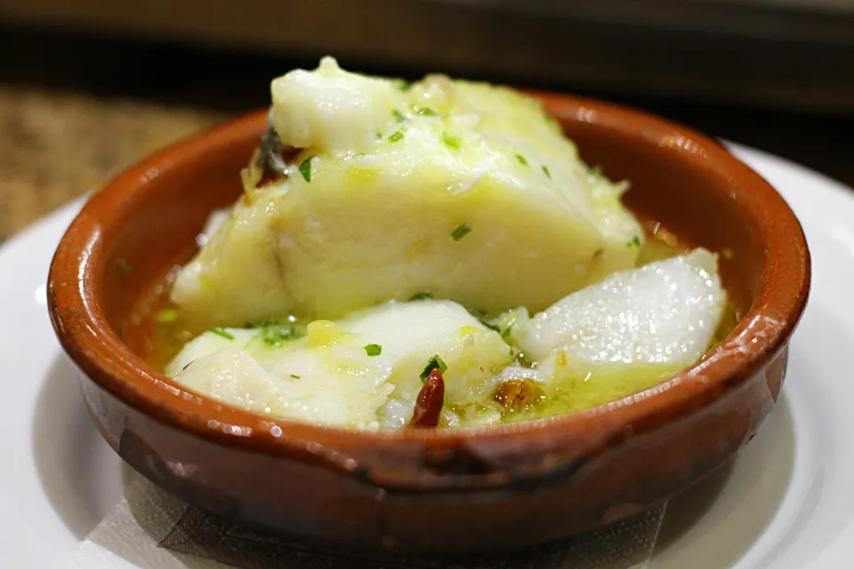
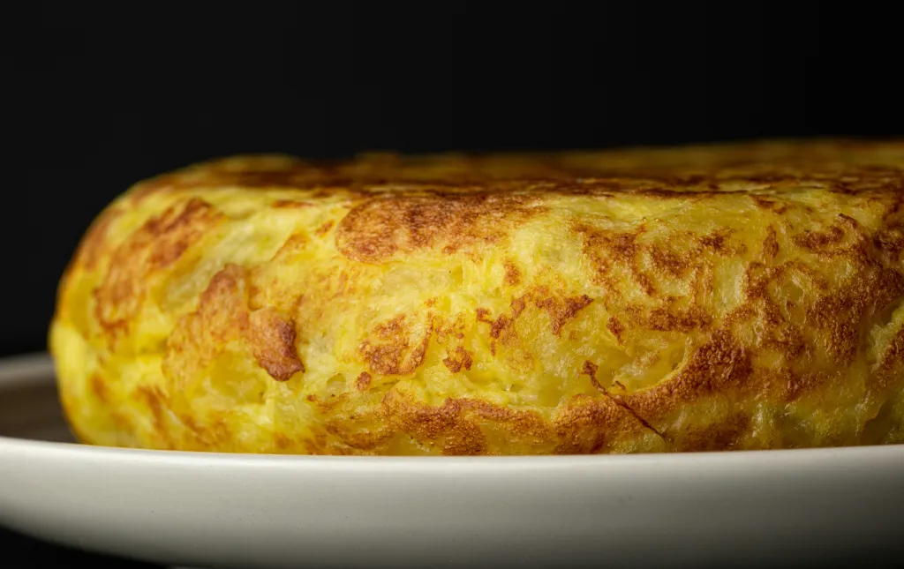

PRATOS TÍPICOS DA CULINARIA ESPANHOLA
Paella
Originário do município de Valencia, também conhecido como Paella Valenciana.
O prato típico espanhol surgiu como alimento de camponeses, nos séculos XV e XVI,
quando era preparado com arroz, óleo de oliva e sal, em uma panela redonda, ampla,
rasa e com alças, chamada de “Paella”.
Com o passar dos anos e a internacionalização
da refeição,
ao preparado simples foi sendo acrescido outros ingredientes como alguns
tipos de mariscos,
modificando a receita original. Com isso, um grupo de cozinheiros
valencianos decidiu
oficializar uma única receita, a fim de não gerar conflito entre a tradicional
paella valenciana e as demais variações da iguaria pelo mundo.

Bacalhau ao pil-pil
Bacalhau ao molho Pil-pil ou Bacalao al Pil-pil, como se diz no País Basco,
é uma receita tradicionalíssima dessa região espanhola.
É um prato bem rústico, porém com o gosto delicado e "potencializado" de bacalhau e azeite.
Explico porque: o molho pil-pil, amarelinho, é feito com uma emulsão do azeite
onde o bacalhau é cozido e da gelatina que se solta da pele do peixe. E é isso,
nada mais que isso. É mais simples do que parece e o resultado é sensacional.

Tortilhas
A Tortilla espanhola é também conhecida como Tortilla de patata. Além de ser
deliciosa e nutritiva, faz parte da história e da alma de seu país. Como a Paella,
é um dos pratos mais representativos da rica cozinha caseira espanhola.
Rotulada como comida vulgar e rústica de tão simples, chega a alcançar
o mais elevado grau da perfeição
